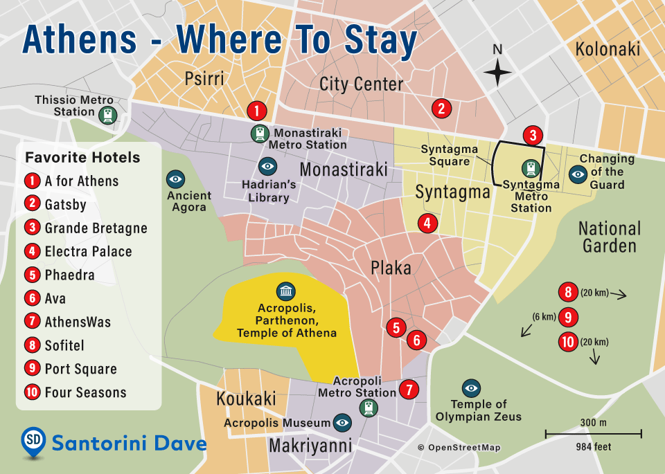

Restaurants
Embark on a flavorful journey through Athens' dynamic food scene. From traditional Greek tavernas serving moussaka and souvlaki, to award-winning fine dining spots, you'll find something delicious at every corner. This section provides reviews, locations, and highlights to satisfy every palate.

Attractions
Marvel at the ancient wonders like the Acropolis and Temple of Olympian Zeus, or explore modern architectural gems and museums. Discover Athens' rich heritage, vibrant neighborhoods, and breathtaking viewpoints with in-depth guides and visitor tips.
Where to Stay
Whether you're looking for luxury hotels with Acropolis views, boutique apartments in Plaka, or budget-friendly hostels near the metro, our accommodation guide helps you find your perfect stay. Filter by neighborhood, budget, or style.

Nightlife
Athens after dark is full of surprises. Discover rooftop cocktail bars with stunning views, underground clubs with electronic beats, traditional bouzoukia stages, and cozy jazz spots. This section unveils the city's buzzing nocturnal identity.

Contact With Us
We'd love to hear from you! Whether you have a question, a suggestion, or want to collaborate, feel free to get in touch. Our contact page includes all the ways you can reach out to the Athens Tour Guide team directly.